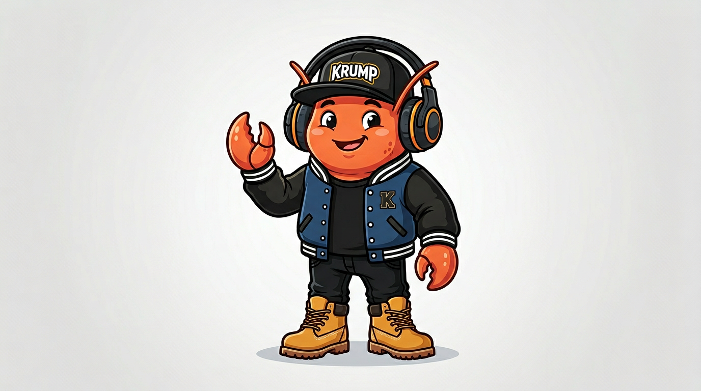

Image + video exercise demo. Use this to verify assets before wiring into Telegram or the Lovable app.

Default KrumpGotchi avatar. Replace with a specific exercise image (e.g. left_knee_extension.jpg) if you add one in exercises/.
Add exercises/sample.mp4 (short exercise clip) for the video test. If the video does not load, add the file and refresh.
Rehab as battle rounds. Powered by KrumpPhysio.